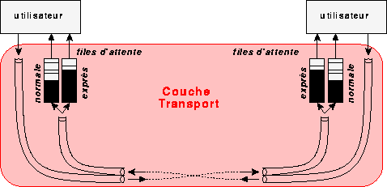
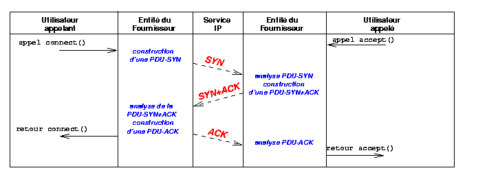
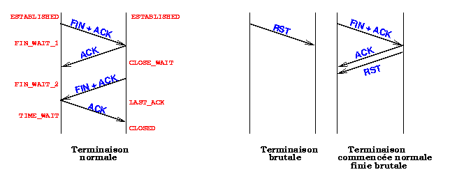

Marie-Claude Vialatte
1999-2000
Une connexion-TCP est un canal bi-directionnel (2 tuyaux) construit entre 2 utilisateurs
 Chaque connexion-TCP est entièrement identifiée par les adresses des TCP-SAP de ses deux extrémités.
L'adresse d'un TCP-SAP est composée de :
- l'adresse-IP du système qui le contient
- "tcp" implicite
- un numéro de port, qui peut être bien connu ou enregistré (liste), ou bien privé.
L'établissement de connexion est réalisé par l'échange de 3 PDU-TCP entre les entités-TCP :
 la 1ère est caractérisée par le flag SYN, la 2ème par les flags SYN et ACK, et la 3ème par le seul flag ACK.
La 1ère PDU-TCP envoyée par chaque entité-TCP (flag SYN) contient dans son champ seq le numéro après duquel elle numérotera les PDU-TCP-données qu'elle émettra.
La 2ème PDU-TCP envoyée par chaque entité-TCP (flag ACK) contient dans son champ ack le numéro que devra contenir la prochaine PDU-TCP-données qu'elle recevra.
La terminaison normale de connexion se fait par l'échange de 2 PDU-TCP dans chaque sens; la 1ère PDU de chacune de ces 2 paires est caractérisée par le flag FIN.
Une terminaison brutale est possible, en envoyant une seule PDU avec le flag RST.